Utilizando o RMA
Introdução:
Interface inicial:
-
Funções importantes que iremos utilizar:

- No ícone adminitrador [A], você pode gerenciar os usuários que estão trabalhando neste projeto.
- Também há os ícones senha [B] e log off [C] que, de certa forma, fazem parte do gerenciamento de usuários.
- Outros ícones importantes são: Atualizar[D], Atualizar/Update[E] e Compilar[F].
Funcionalidade/Nomenclaturas:
- Decision flow = Fluxo de decisões
- Decision table = Tabela de decisão
- Decision tree = Árvore de decisão
- Function = Função
- ScoreCard = Sistem de scoragem
- Business Term Set = Variáveis que os usuários podem criar
- Ruleset (Rulebuilder) = Regras "simples" de negócios
Saindo e entrando no projeto RMA
- Ao ligar o PC, como nosso RMA está embarcado no eclipse, devemos abrir o eclipse e startar o projeto:
- Clicar no projeto - Ir na aba Project - Rule Maintenance Application - Start [Iniciar] - Finish.
- Após startar o projeto devemos abrir o RMA:
- Clicar no projeto - Ir na aba Project - Rule Maintenance Application - Open [Abrir].
Decision Flow
Criando um fluxo principal
- Com o projeto rodando no local host (RMA), clicar com o botão direito sobre a pasta Business Library Folder
-
Ir em New - Decision Flow - dar o nome de Fluxo_Principal. Lembre-se que o nome deve ser o mesmo que você atribuiu no tutorial anterior.

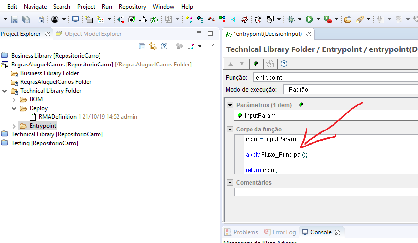

Organizando o projeto em pastas
Para ter um bom projeto é necessário estar bem organizado. Iremos, neste tópico, organizar o nosso projeto em pastas que serão utilizadas conforme o projeto ganhe maiores proporções.
- Clicar na pasta principal Business Library Folder e ir na aba NEW - FOLDER
- Nome: Ruleset
- Clicar na pasta principal Business Library Folder e ir na aba NEW - FOLDER
- Nome: BusinessTerm
- Clicar na pasta principal Business Library Folder e ir na aba NEW - FOLDER
- Nome: DecisionTable
- Clicar na pasta principal Business Library Folder e ir na aba NEW - FOLDER
- Nome: DecisionTree
- Clicar na pasta principal Business Library Folder e ir na aba NEW - FOLDER
- Nome: Function
- Clicar na pasta principal Business Library Folder e ir na aba NEW - FOLDER
- Nome: Scorecard
OBS: Não é necessário criar todas as pastas agora. Você pode ir criando conforme necessidade. Estou criando todas agora para fins didáticos.
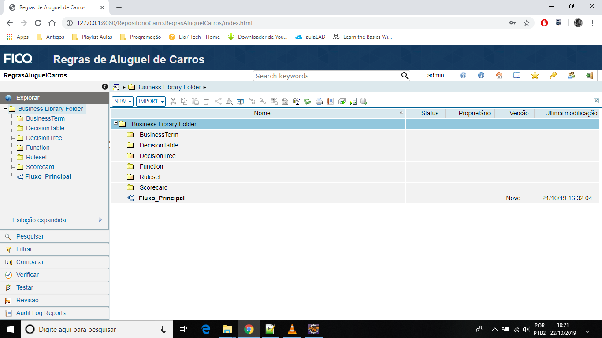
Decision Tree
Iremos criar nossa primeira Task de decisão do Fluxo_Principal. Será uma Decision Tree que utilizará os dados de idade e renda para dividir grupos de clientes em aprovados ou reprovados.
-
Criando um modelo de Variável de Negócio [BusinessTerm]
- Clicar na pasta BusinessTerm - New - Business Term Set
- Dar o nome de VariaveisNegocio
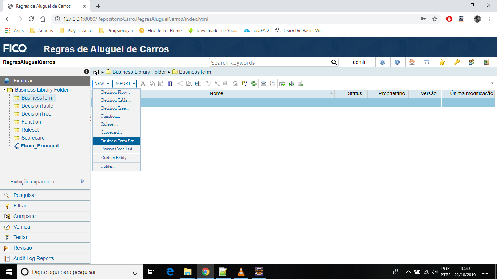
-
Criando um Value List
- Clicar no segundo sinal de + e depois clicar no Value List 1 que irá aparecer.
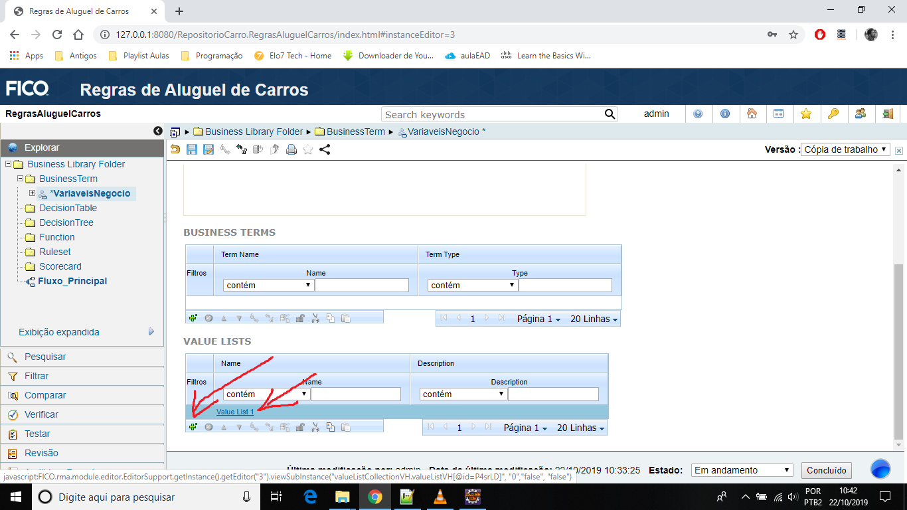
- Na nova tela, você deverá dar o nome de NegadoAprovado e atribuir os valores de negado e aprovado, conforme a imagem abaixo.
- Por fim, clicar em check-in para que as alterações tenham efeito.


- Após o check-in, voltar na tela anterior.
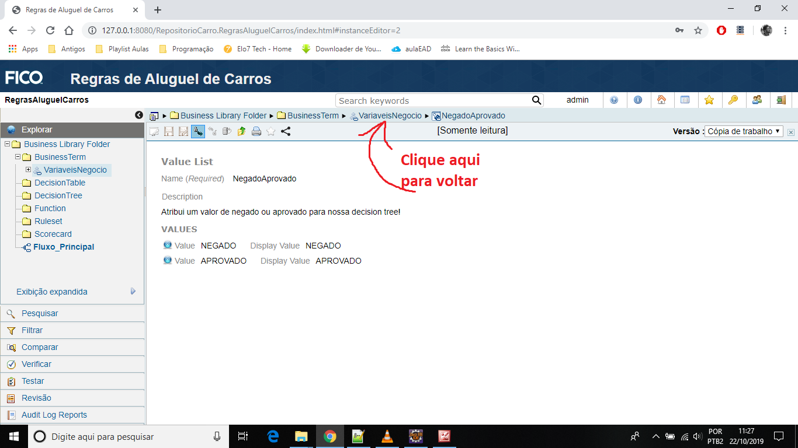
-
Criando um Business Term
- Ao acessar novamente a aba VariaveisNegocio você deverá clicar na opção check-in.
- Clicar no primeiro sinal de + e depois clicar no term1 que irá aparecer. Observe a imagem.
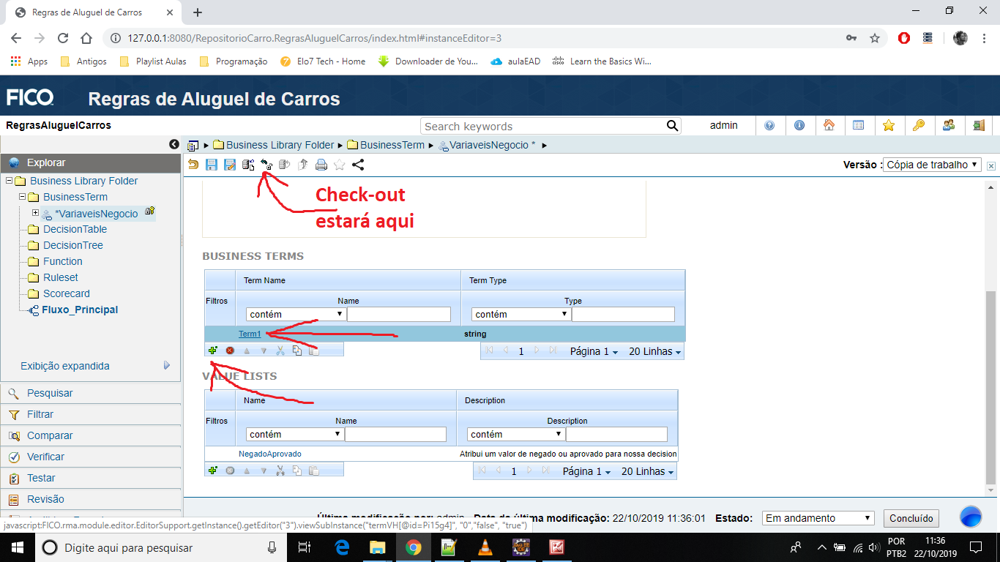
- Dar o nome de: NegadoAprovadoAtributo, deixar o tipo como String e atribuir o Value List como NegadoAprovado.
- Fazer o check-in.
-
Criando de fato a Decision Tree
- Clicar na pasta DecisionTree - ir na aba New - opção Decision Tree.
- Colocar o nome de: TreeNegadosAprovados, adicionar uma descrição, deixar o tipo como Void e clicar em Next.
- Nesta janela você deve selecionar as variáveis (Idade e Renda) que vai usar e clicar em Next. Observe a imagem. (Lembre-se, estas variáveis são definidas no arquivo.jar que está no drive e você já deve ter importado no tutorial anterior).
- O mesmo se repete na proóxima janela (Action). (Na ação iremos usar a variável que acabamos de criar).


- Após configurar as variáveis, a janela de criação de árvores de decisão irá aparecer.
- Basta clicar com o botão direito do mouse sobre o ícone do Start para iniciar a construção da Decision Tree.

- Após clicar com o botão direito do mouse sobre o ícone Start, ir na opção Insert Split
- Selecionar a primeira variável que irá segmentar nossos clientes: Idade (AGE).
- Neste momento, iremos segmentar da seguinte forma: Clientes menores de 18 (Negado) e clientes maiores que 18 (Aprovado).
- Basta digitar 18 e clicar em Add. Depois clicar em Apply.

- Iremos criar nossa segunda segmentação: clientes com renda inferior a R$ 1000 serão considerados Negado.
- Basta clicar com o botão direito do mouse sobre a próxima área que queremos segmentar e ir na opção Insert Split
- Neste caso, queremos segmentar os clientes que têm 18 anos ou mais, pois os menores de idade já foram classificados como Negado.
- Observe a imagem a seguir:
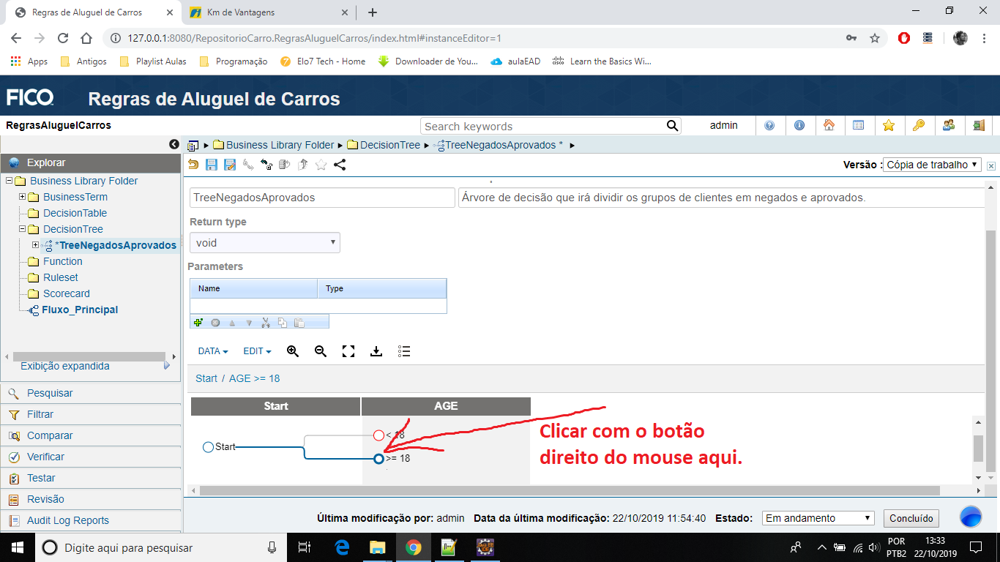
- Na tela de Insert Split, selecione a variável renda.
- Coloque o valor de 1000 e clique em ADD. Depois clique em Apply.
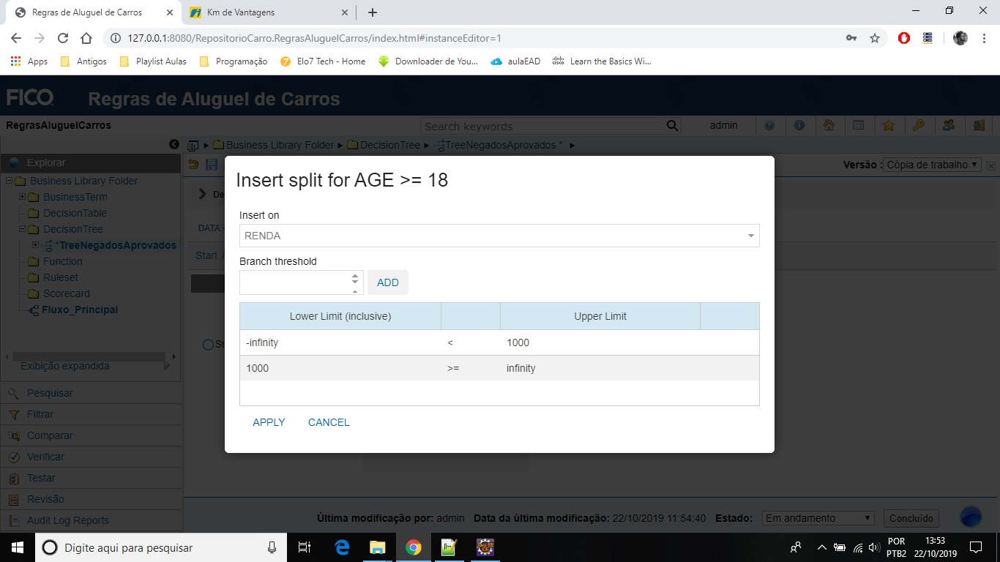
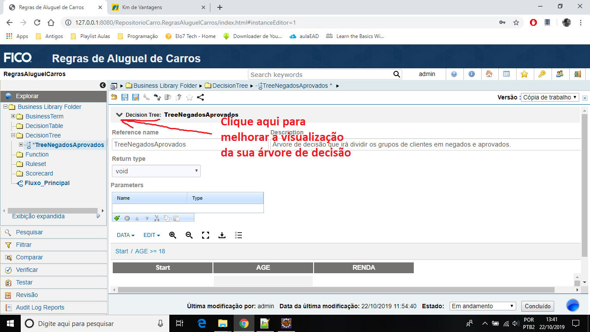
- Por fim, iremos atribuir os valores de Negado e Aprovado à nossa árvore de decisão.
- Clicar com o botão direito do mouse sobre o primeiro valor a ser acionado.
- Selecionar a opção Assign Value e ecolher a ação Negado.
- Repetir o processo para os outros três pontos.
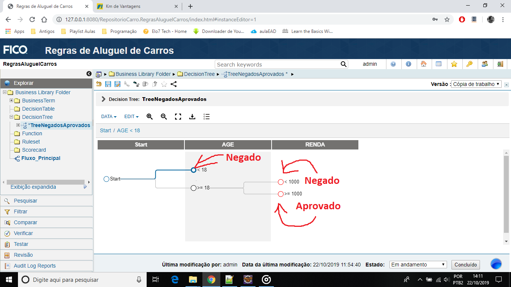
- Sua Decision Tree deverá ficar como na imagem abaixo. Agora basta fazer o check-in para salvar as alterações.
- Clicar em Fluxo_Principal para acrescentar nossa árvore de decisão.

-
Adicionando a Decision Tree no Fluxo.
- Após clicar no Fluxo_Principal, você deve clicar em check-out e adicionar um Task, como ilustrado na imagem abaixo.
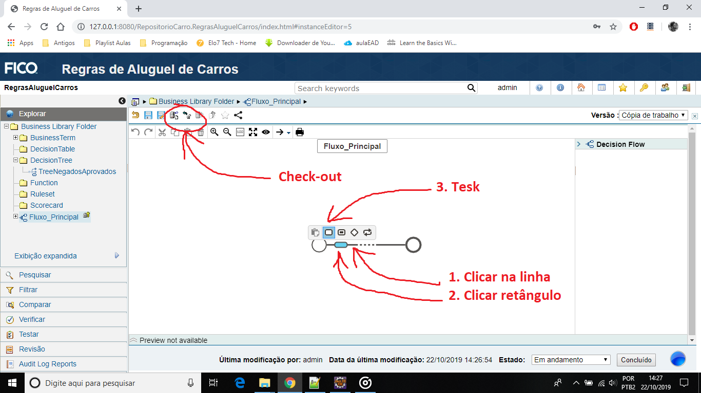
- Após adicionar a Task, você deve escolher um nome, chamar a Decision Tree que acabamos de criar e clicar em Apply. (Fazer o check-in)
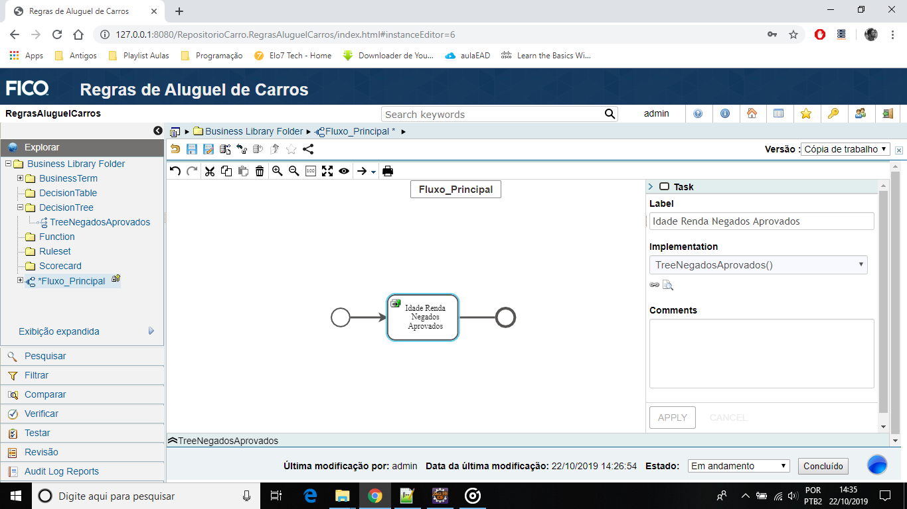
Function
Neste tópico, iremos criar uma função para que de fato nossa Decision Tree criada no tópico anterior tenha um efeito de output.
Até o momento, nossa Decision Tree divide o grupo de clientes em Aprovados e Negados, conforme sua Idade e Renda.
Agora iremos criar uma função que recebe estes valores (Aprovado ou Reprovado) e armazena na variável DECISION. Lembrando que esta variável foi criada no arquivo.jar. (Em breve farei mais tutoriais sobre este arquivo).
-
Criando a função.
- Clicar na pasta Function que criamos e em seguida ir em NEW - Function.
- Colocar o nome de FunctionNegadosAprovados.
- Nota-se que o nome da função é semelhante ao da árvore de decisão (TreeNegadosAprovados). Isso facilita a compreensão das partes.
- Clique na opção [Switch to Rule Builder] para acionar o modo de edição simples de código. Depois clique no editor de código.
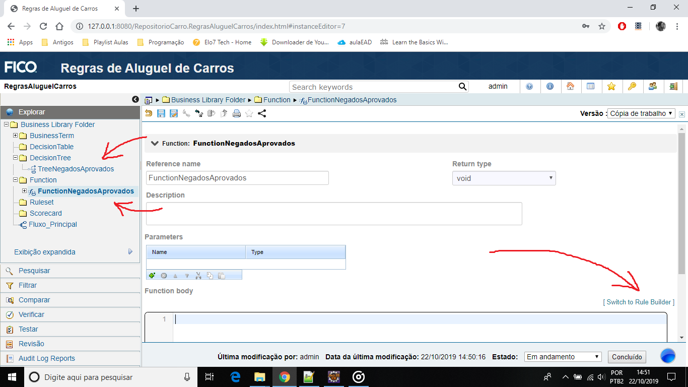

- No editor de código, escolha a variável que deseja armazenar os outputs da árvore de decisão.
- Para este tutorial, utilizaremos a variável Decision.
- Escolher a variável que vai armazenar no nosso output.
- O editor funciona no modo de arrasta e solta. Você clica na variável, arrasta até o lugar e solta.
- Clique em Done para finalizar.
- Faça o check-in
- Observe as imagens abaixo como exemplo:
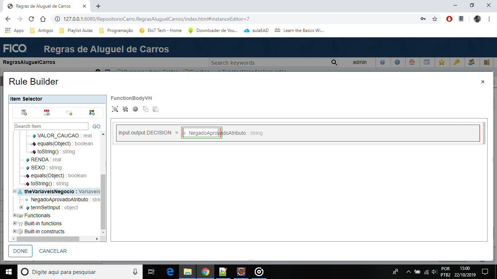
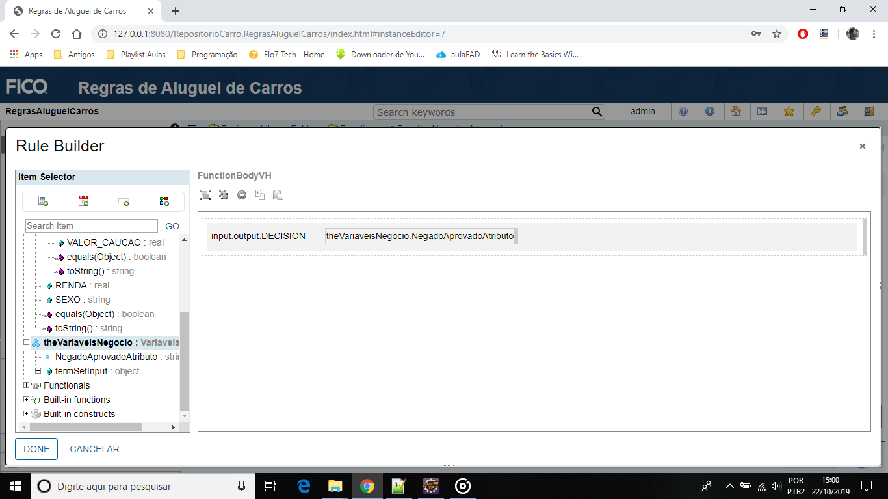
-
Adicionando a função ao Fluxo_Principal:
- O processo é semelhante ao adicionar a árvore de decisão no fluxo.
- Após clicar no Fluxo_Principal, você deve clicar em check-out e adicionar uma Task.
- Após adicionar a Task (depois da Task de árvore de decisão) você deve Escolher um nome, chamar a Decision Tree que acabamos de criar e clicar em Apply. (Fazer o check-in)
- Observe a imagem a seguir:
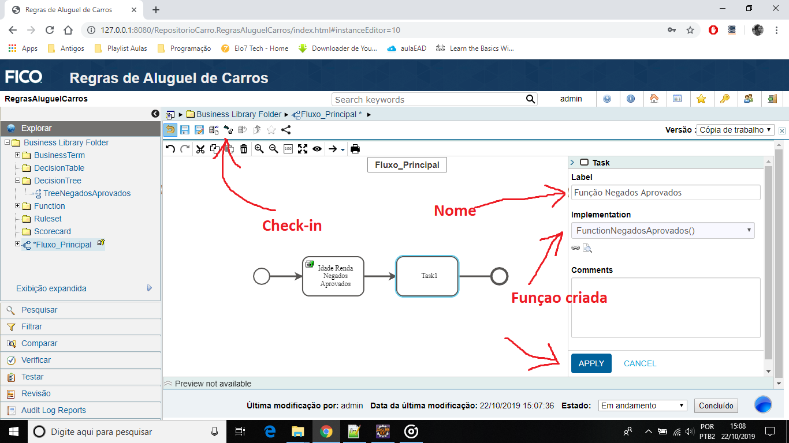
Testing
Até o momento, criamos apenas uma regra de negócio. Nosso programa deve analisar a idade e renda do cliente e retornar a sua aprovação ou reprovação.
Para saber se tudo está correto até o momento, iremos fazer um teste.
-
Gerando arquivo de teste.
- Clicar na aba Testar e ir em Decision Testing.
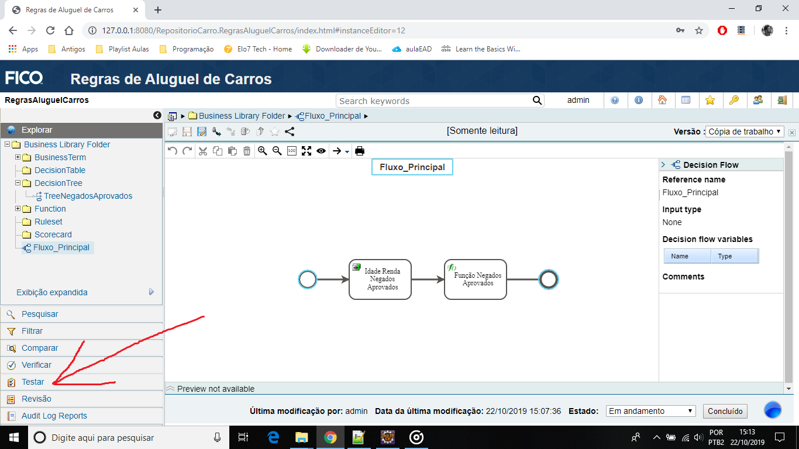
- Selecionar a opção Test.
- Selecionar a opção Entrypoint(DecisionInput): DecisionInput
- Ir em CONFIGURE DATA para gerar um modelo de teste.
- Para gerar o modelo de teste, iremos utilizar as variáveis Age e Renda no input e Decision no Result.
- Clicar em Download para concluir.

- Ir na sua pasta de Downloads e abrir, no notepad++, o arquivo (inputdata.csv) que foi gerado.

- Você deve inserir as informações para testar:
- Obs: os valores Result-State e Result-Detail não devem ser preenchidos, mas as vírgulas devem ser mantidas. O valor de result:DECISION também não deve ser preenchido.
- Seguir o exemplo abaixo:
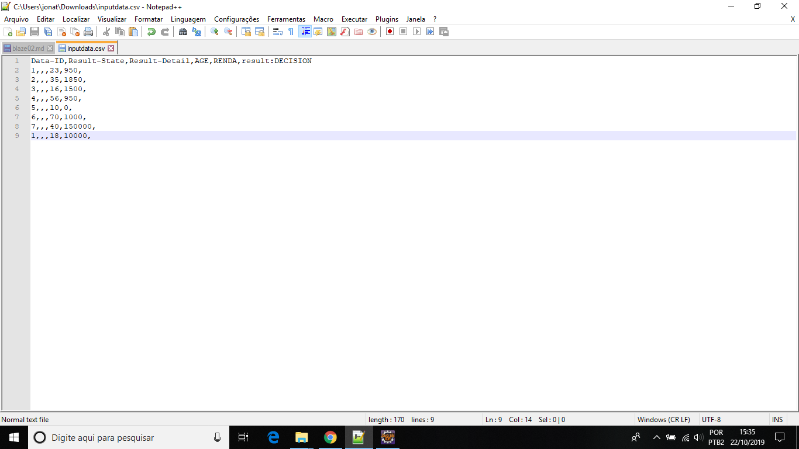
- Salvar o arquivo na pasta C:\Blaze\projetos\unit-tests.
- Caso não tenha esta pasta, basta criá-la e mover o arquivo para dentro dela.
-
Testando a aplicação.
- Agora que você tem o arquivo de teste com os dados a serem testados, basta clicar em UPLOAD DATA FILE e selecionar o arquivo de teste que criamos.
- Lembrando que o arquivo deve estar na pasta C:\Blaze\projetos\unit-tests. O arquivo se chama inputdata.csv

- Ao carregar o arquivo, basta clicar em RUN TEST e esperar pelos resultados.
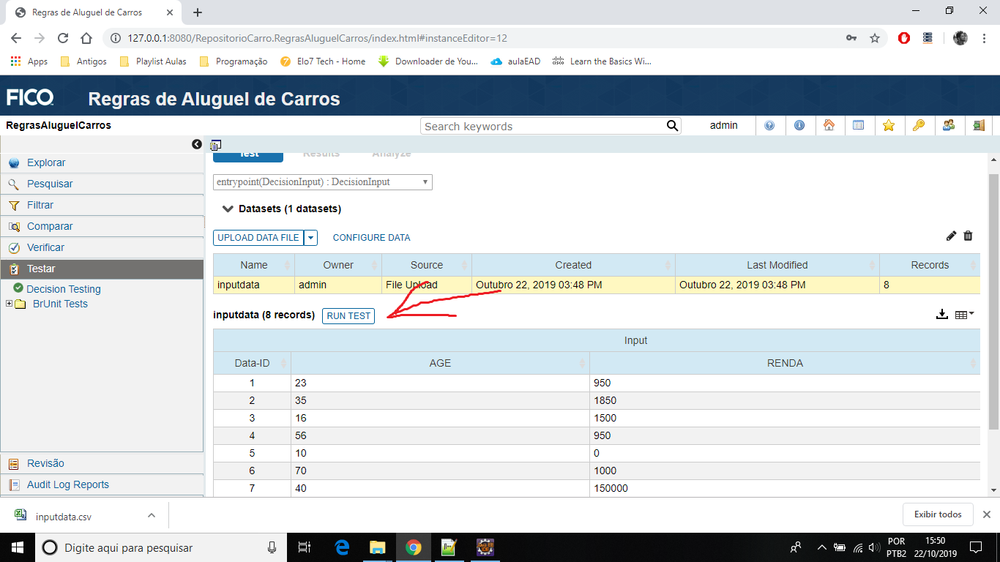
-
Resultados do teste.
- Como podemos observar, todos os testes foram bem sucedidos. Todos os clientes que tinham menos de 18 anos e/ou renda inferior a R$ 1000 foram taxados como Negados e os demais como Aprovados.
- Esta foi uma simulação simples de aprovação para alugar carros. Muitas variáveis podem ser levadas em consideração. Modelos de decisão mais avançados serão discutidos nas próximas publicações.

Mais Tutoriais - Blaze
-
1 Introdução ao Blaze
-
3 Deploy no Tomcat -
-
4 Tópicos avançados - Em construção.
Elaborado por:
Jonathan Cardoso Lopes Domingos
21/10/2019